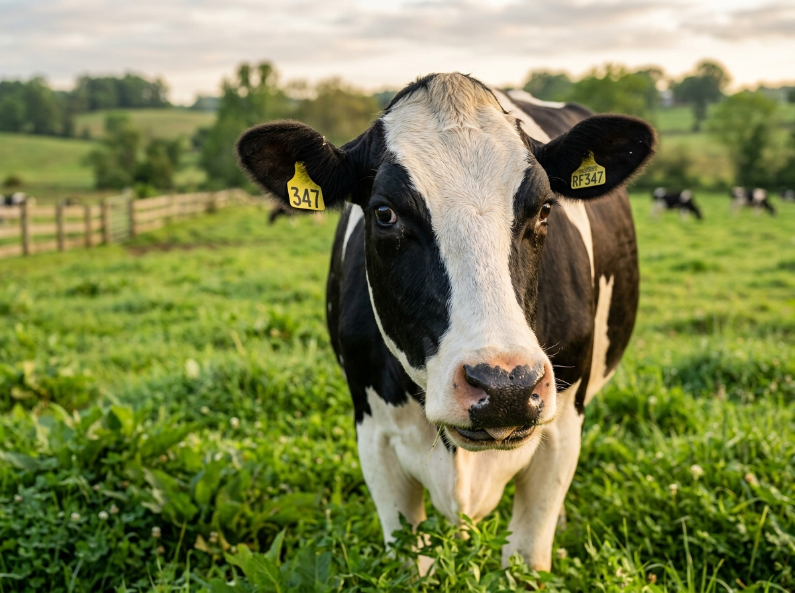
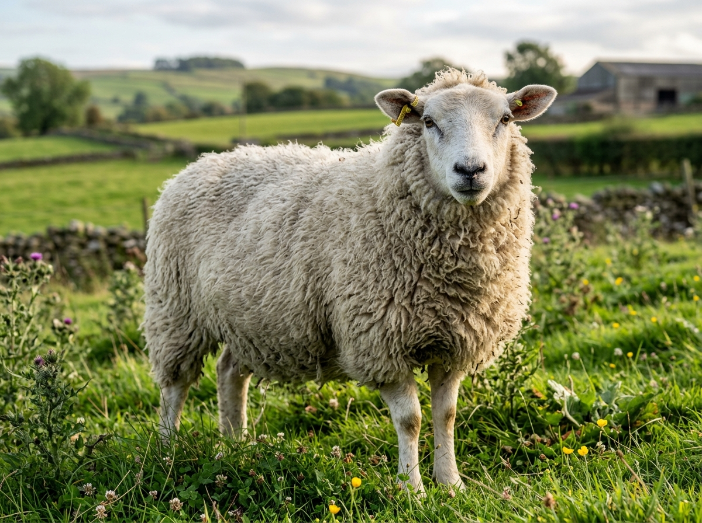
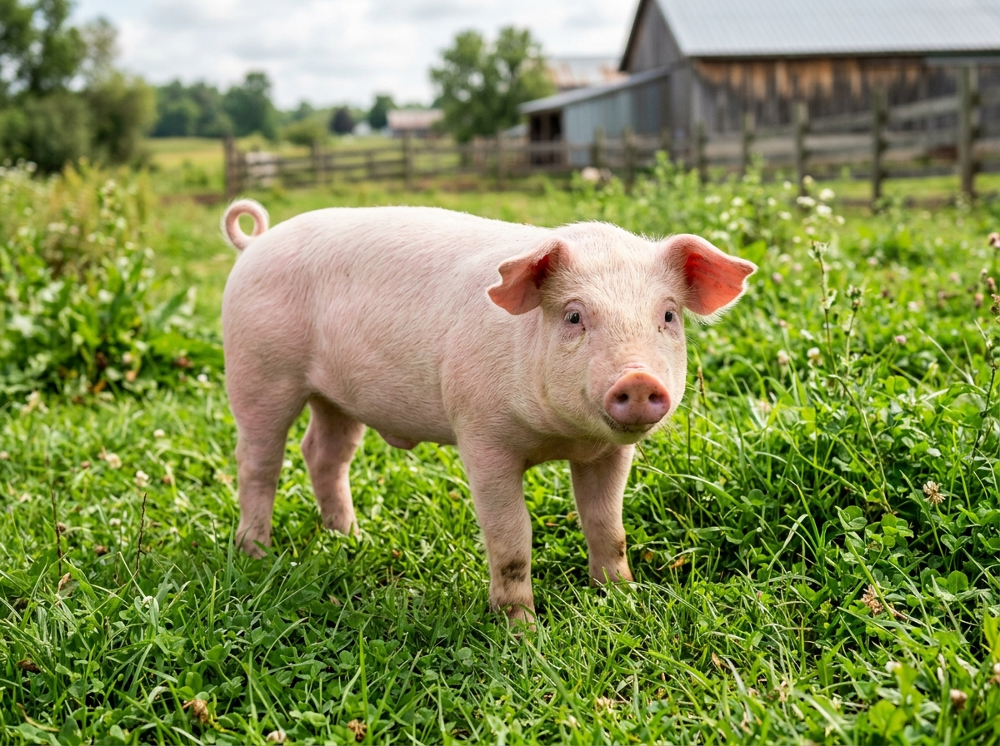
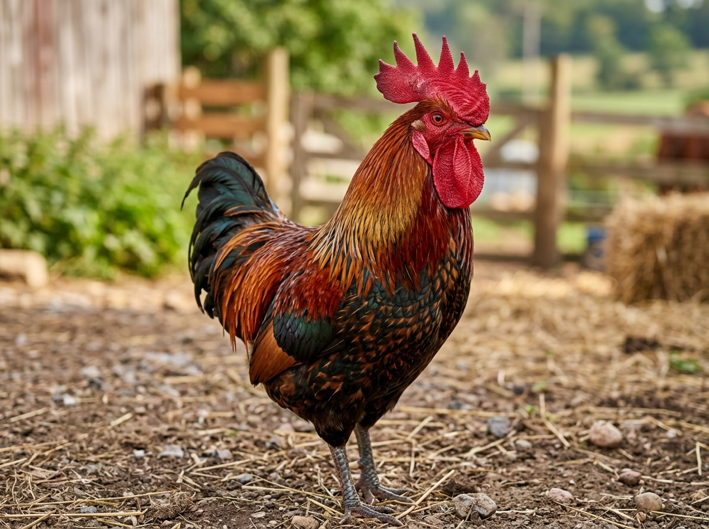
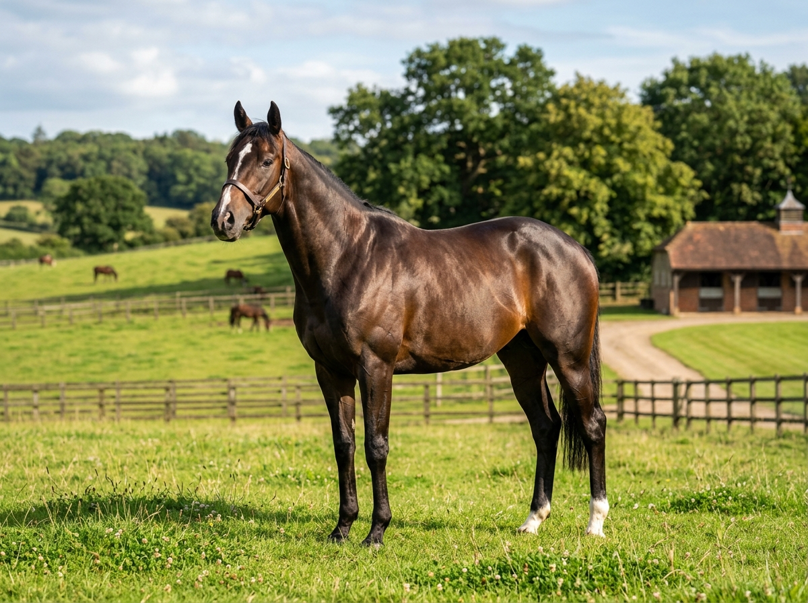

A high-performance genomics platform unifying Animal QTLdb trait catalogs, dual Ensembl/NCBI GTF models, and flanking window discovery into one tactile, interactive studio.
Directly cross-reference chromosome positions against Animal QTLdb trait catalogs across Cattle, Goat, Sheep, Pig, Chicken, and Horse to pinpoint phenotypic associations instantly.
Go beyond fixed gene boundaries. Support for SNP position markers with custom ±kb flanking radius expands the discovery window for regulatory elements and causal variants.
Seamlessly digests both Ensembl and NCBI annotation formats, calculating exact overlap base pairs, percentages, and transcription start site (TSS) distances automatically.
Engineered for computational genomics, livestock breeding programs, and candidate gene prioritization.
Curated BED & GFF lookups for milk fat, fleece fineness, meat quality, ovulation rates, and disease resistance.
BED & GFF Lookup
Supply chromosome and single SNP positions with --window to generate customized genomic search regions automatically.
Detailed breakdown of coding sequences (CDS), UTRs, and exon phase boundaries with causal mutation notes.
GTF / GFF3 FormatUse the command-line tool for high-throughput batch analyses or this interactive web workspace for immediate visual exploration.
CLI + Web WorkspaceChoose your analysis type and provide your genomic data.
Coordinates + GTF File → Get List of Genes
Coordinates + Select Animal → Get List of QTLs
Coordinates + Animal + GTF → Genes & QTLs Combined
Provide genomic coordinates (either Chr, Start, End or Chr, Position with a flanking window) along with a GTF file to extract the complete list of overlapping genes.
Supply your custom GTF file, or select a pre-loaded reference GTF for livestock species:
Select your livestock animal and provide coordinates (Chr, Start, End or Chr, Position with window). QGAT uses internal Animal QTLdb files to return the list of overlapping QTLs.





Map both GTF gene models and Animal QTLdb intervals on the same coordinates to see which genes overlap known trait QTLs.
Handles TSV, CSV, or BED files with automatic column alias detection (chr, chrom, pos, start), BOM removal, and space trimming.
For SNP markers, computes symmetrical or asymmetrical flanking boundaries ([pos - window, pos + window]) to encompass potential promoter or regulatory elements.
Intersects regions with species-specific Animal QTLdb records, identifying trait classifications, PubMed citations, and candidate locus annotations.
Calculates overlap base pairs, percentage coverage, and distance to the Transcription Start Site (TSS) against Ensembl or NCBI GTF models.
# 1. Install QGAT directly from GitHub $ pip install git+https://github.com/akankshachoudhary/QGAT.git # 2. Check installed version $ QGAT --version QGAT version 0.2.0
# Find overlapping QTLs with 50kb flanking window $ QGAT qtl -i snps.tsv -species cattle -o output_qtls.tsv --window 50000 # BED-based or GFF-based lookup with trait filter $ QGAT qtl -i gwas_hits.tsv -species goat -trait
# Annotate regions using custom GTF and feature filter $ QGAT annotate \ -i snps.tsv \ -gtf Bos_taurus.gtf \ -o annotated.tsv \ --window 25000 \ --feature gene
# Python SDK integration from QGAT import annotate_regions df = annotate_regions( input_file="snps.tsv", species="cattle", window=50000 ) print(df.head())